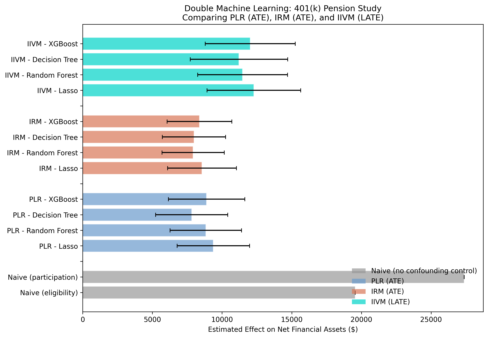
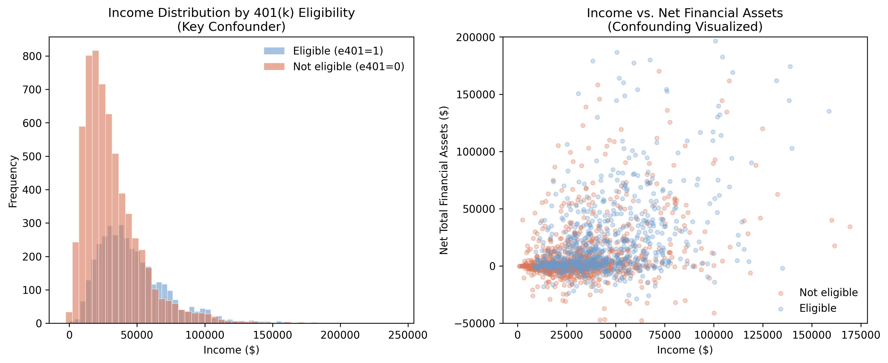
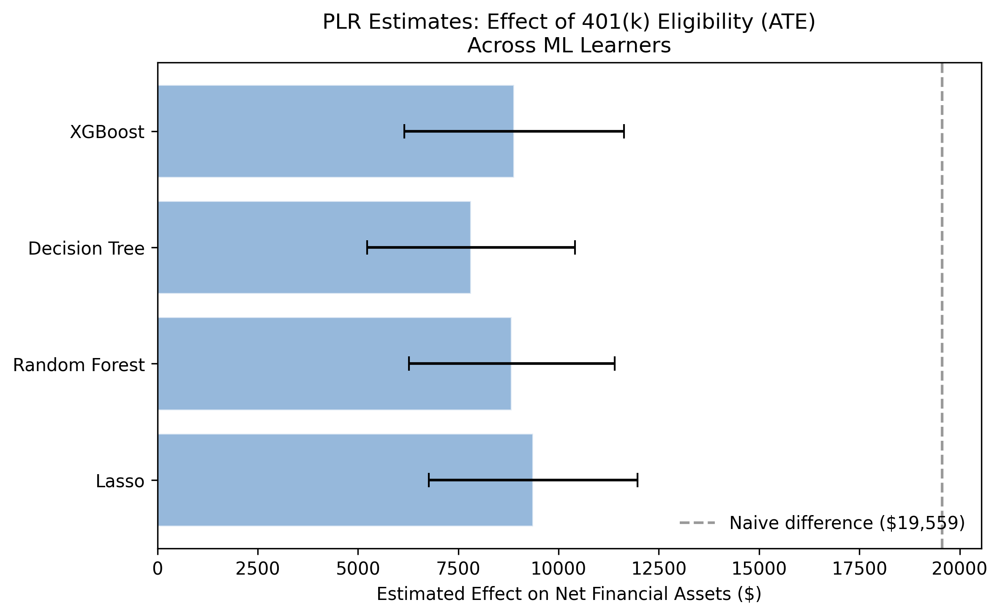
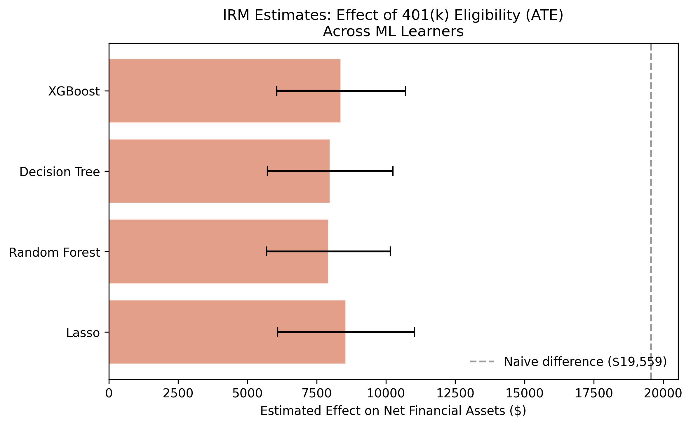
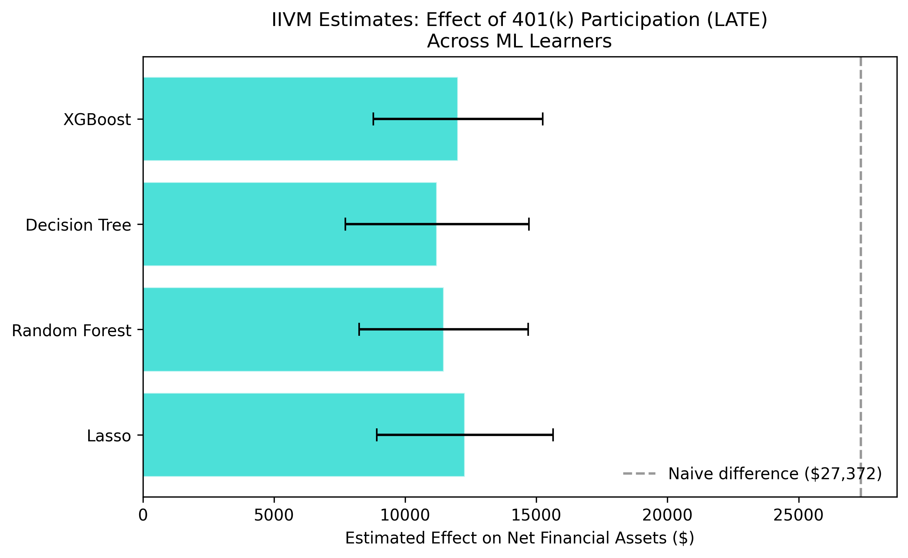

From eligibility effects to complier analysis
Nagoya University (GSID)
June 11, 2026
Act I
Over $7 trillion sits in U.S. 401(k) accounts. Eligible households hold $19,559 more in net financial assets than ineligible ones.
But eligible households also earn $15,368 more income. Is the gap the plan — or the people who get the plan?

Naive baselines (gray) versus three DML models across four ML learners, \(\hat\theta \pm 95\%\) CI. Naive overstates; DML cuts it roughly in half.
Act II
net_tfa), median just $1,499e401), 37.1% eligiblep401), 26.2%Eligibility is set by the employer; participation is a household choice. That distinction drives all three models.

Eligible households (blue) earn far more and cluster in the high-income, high-wealth region. Income opens a backdoor path from access to savings.
\[\hat\Delta_{\text{naive}} = \underbrace{\theta_0}_{\text{causal effect}} + \underbrace{\text{bias}}_{\text{income, education, }\ldots}\]
The naive $19,559 is not wrong arithmetic — it is the right gap answering the wrong question. DML’s whole job is to subtract the second term.
\[Y = \theta_0 D + g_0(X) + \varepsilon, \qquad D = m_0(X) + V\]
Predict savings from covariates. Residual \(\tilde Y = Y - \hat g_0(X)\) is the unexplained savings.
Predict eligibility from covariates. Residual \(\tilde D = D - \hat m_0(X)\) is the surprise eligibility.
Regress \(\tilde Y\) on \(\tilde D\): the slope is \(\hat\theta_0\). Both residuals are cleaned of confounding, so only the causal channel remains.
The estimating equation’s derivative w.r.t. small nuisance errors is zero at the truth. Sloppy \(\hat g_0, \hat m_0\) barely move \(\hat\theta_0\).
Fit \(\hat g_0, \hat m_0\) on \(K-1\) folds, predict on the held-out fold, rotate. No row is ever scored by a model that saw it.
Orthogonality kills regularization bias; cross-fitting kills overfitting bias. Together they let Lasso, forests, or XGBoost serve as nuisance learners with no harm to inference.
import doubleml as dml
data_dml = dml.DoubleMLData(data, y_col="net_tfa", d_cols="e401", x_cols=features_base)
ml_l = RandomForestRegressor(...) # g0: outcome nuisance
ml_m = RandomForestClassifier(...) # m0: treatment nuisance
model = dml.DoubleMLPLR(data_dml, ml_l=ml_l, ml_m=ml_m, n_folds=3)
model.fit() # cross-fitting + orthogonal score, internally
PLR estimates across four ML learners; all cluster near $8,000–$9,400, far below the $19,559 naive line (dashed).
\[\theta_0 = E\!\left[g_0(1,X) - g_0(0,X) + \frac{D\,(Y-g_0(1,X))}{m_0(X)} - \frac{(1-D)\,(Y-g_0(0,X))}{1-m_0(X)}\right]\]
The doubly-robust (AIPW) score: an outcome model corrected by inverse-propensity weighting. Consistent if either \(g_0\) or \(m_0\) is right — a safety net.

IRM estimates across four learners ($7,924–$8,559) are even tighter than PLR, with smaller standard errors.
\[\theta_{\text{LATE}} = \frac{E[Y\mid Z=1] - E[Y\mid Z=0]}{E[D\mid Z=1] - E[D\mid Z=0]}\]
Participation \(D\) is endogenous (financial discipline is unobserved). Eligibility \(Z\) is a nudge: it opens the door without forcing anyone through.
A Wald-type ratio: the instrument’s effect on savings, divided by its effect on participation.
| Type | Behavior | In the LATE? |
|---|---|---|
| Always-takers | Participate regardless of eligibility | no |
| Never-takers | Never participate, even if eligible | no |
| Compliers | Participate because eligible | yes |
| Defiers | Assumed not to exist (monotonicity) | — |
The LATE is the effect of participation on the marginal households a policy actually moves.

IIVM LATE estimates across four learners ($11,215–$12,281) sit well above the ATE band, as expected for compliers.
Whole-picture comparison: naive (gray), PLR (steel), IRM (orange), IIVM (teal). Within each model the four learners cluster tightly.
Act III
55%
of the $19,559 naive gap (≈ $10,829) was income-driven bias, not causal effect — the ATE is $8,730
$8,730
PLR mean ATE (IRM: $8,213); every 95% CI across two models and four learners excludes zero
$11,746
IIVM LATE on compliers — the marginal participants an eligibility expansion targets
Objection. Letting an ML model pick the controls can’t manufacture identification.
Response. Correct. DML disciplines estimation, not identification.
The ATE needs conditional exogeneity; the LATE adds instrument validity and monotonicity.